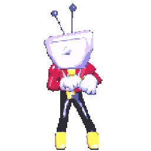

Tenna is one of my favorite characters from Deltarune. He's a showhost Darkner manifested from Kris's TV, hence the showtime and host feel.
I resonate with his character a lot with how theatrical and dramatic he is, to how much of a self-destructive person he can be to those around him, and himself.
I like him a lot because of the way he's presented with how much energy he's got. He's related to Spamton, another loved character within the community, but I find him pretty average.
We meet Spamton the chaper before Tenna's introduction, and he serves a tertiary purpose of foreshadowing him as a whole.
Even his theme when we see him is part of the intro music to when we meet Tenna.
Spamton's a washed up, dumpster living spam e-mail that used to be popular, but went insane.
How I feel about him personally is that his character is fine and interesting, I just don't resonate or feel anything like I do towards Tenna.
